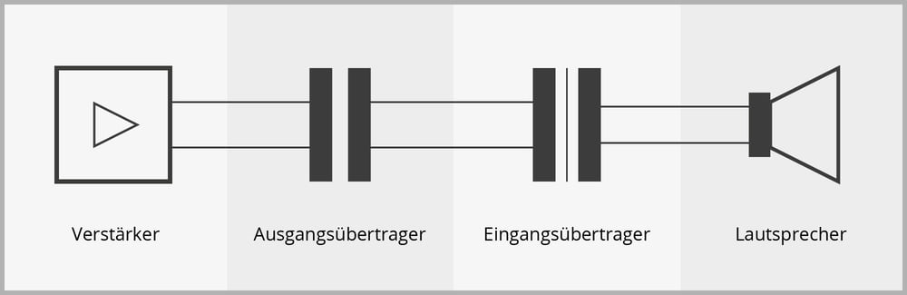
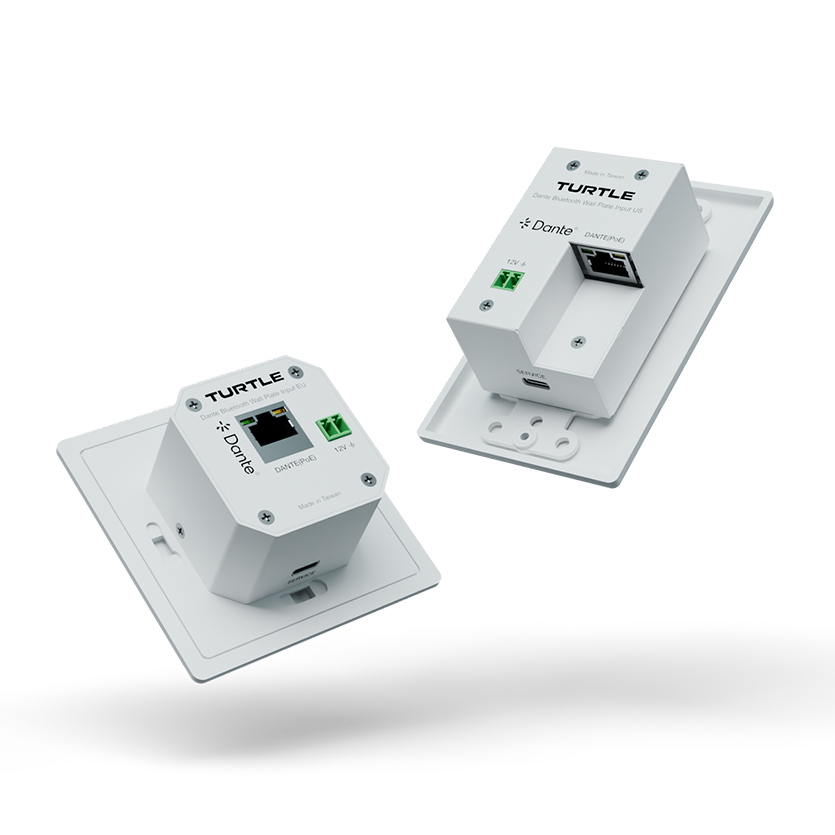

Mischverstärker
Ein Mischverstärker ist ein Gerät, das mehrere Audiosignale ineinander mischt und verstärkt.
100V-Technik, Verstärker und Dante Audio verständlich erklärt
Was ist 100V-Technik? Warum nutzt man sie und welche Vorteile bietet sie?

Ein Mischverstärker ist ein Gerät, das mehrere Audiosignale ineinander mischt und verstärkt.
Ein Mehrkanalverstärker kann für mehrere Lautsprecherzonen verwendet werden. Jede Zone hat dabei seinen eigenen Eingang und Ausgang.
Der Verstärker bekommt die Audiosignale über ein Dante-Netzwerk und wird nicht analog eingespeist.
Dante ist ein von Audinate entwickelter Standard, mit dem über ein Ethernet-Netzwerk Audiosignale übertragen werden können.

Platzhalter